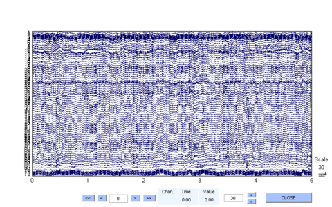

plotLabeledData
plots the labeled data from labelData
Contents
Syntax
labelSet = plotLabeledData(inputData, model, results) labelSet = plotLabeledData(inputData, model, results, 'param1', value1, ...)
Description
labelSet = plotLabeledData(inputData, model, results) displays a data scroll plot window with the event information taken from labelData.
labelSet = plotLabeledData(..., 'param1', value1, ...) specifies additional parameters to be used.
The required input arguments are are:
| Arguments | Description |
| inputData | An EEGLAB EEG structure containing continuous 2D EEG data or a 2D matrix array of size (channels x frames) |
| model | The SVM model output from getModel. |
| results | The output from labelData |
The optional inputs are passed in as name-value pairs:
| Name | Description |
| 'srate' | Sampling rate of the data |
| 'includeClasses' | Cell array of strings denoting the desired plotting categories or labels (all by default) |
| 'eventList' | An array of structures with a .type and .latency field. Both fields are numeric. The field .latency is represented in frames. |
| 'chanlocs' | An array of structures with a .labels field which is a string label denoting the channel name. |
The output argument is:
| Argument | Description |
| labelSet | A cell array with columns [eventtype], [startTime] and [endTime] |
Example
Build the artifact classification model from the sample data included in the toolbox, and display only eye blinks and jaw clenches:
load data/training; load data/labels; model = getModel(training, labels, 1 : 64); load data/testing; results = labelData(testing, model, 256, .125); labelSet = plotLabeledData(testing, model, results, 'srate', 256, 'includeClasses', {'Eye Blink', 'Jaw Clench'})
labelSet =
'Eye Blink' [ 12.4336] [ 13.0547]
'Eye Blink' [ 19.8086] [ 20.3047]
'Eye Blink' [ 25.8086] [ 26.4297]
'Eye Blink' [ 40.9336] [ 41.6797]
'Eye Blink' [ 46.4336] [ 46.6797]
'Eye Blink' [ 55.5586] [ 55.9297]
'Eye Blink' [ 69.1836] [ 69.3047]
'Eye Blink' [ 93.6836] [ 94.3047]
'Eye Blink' [ 97.3086] [ 97.5547]
'Eye Blink' [105.6836] [105.8047]
'Eye Blink' [119.0586] [119.6797]
'Eye Blink' [120.3086] [120.4297]
'Eye Blink' [123.9336] [124.4297]
'Eye Blink' [137.4336] [137.8047]
'Eye Blink' [139.5586] [139.9297]
'Eye Blink' [164.3086] [164.5547]
'Eye Blink' [167.8086] [168.0547]
'Eye Blink' [173.4336] [174.0547]
'Eye Blink' [175.1836] [176.0547]
'Eye Blink' [177.1836] [177.3047]
'Eye Blink' [178.1836] [178.3047]
'Eye Blink' [178.4336] [178.5547]
'Eye Blink' [179.0586] [179.5547]
'Jaw Clench' [181.5586] [181.9297]
'Eye Blink' [184.5586] [185.1797]
'Eye Blink' [228.1836] [228.3047]
'Eye Blink' [235.6836] [235.9297]
'Eye Blink' [268.1836] [268.4297]
'Eye Blink' [269.8086] [270.1797]
'Eye Blink' [274.1836] [274.8047]
'Eye Blink' [285.1836] [285.6797]
'Eye Blink' [296.9336] [297.4297]
'Eye Blink' [350.0586] [350.6797]
'Eye Blink' [355.6836] [356.4297]
'Eye Blink' [356.5586] [357.8047]
'Eye Blink' [358.1836] [358.3047]
'Eye Blink' [358.9336] [359.3047]
'Eye Blink' [361.8086] [362.6797]
'Eye Blink' [362.8086] [363.1797]
'Eye Blink' [405.3086] [405.4297]
'Eye Blink' [422.0586] [422.1797]
'Eye Blink' [446.6836] [447.5547]
 Copyright 2011-2013 Vernon Lawhern and Kay A. Robbins, University of Texas at San Antonio